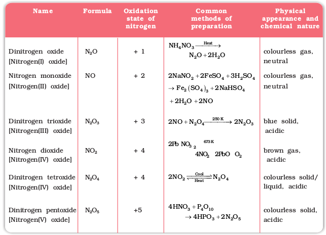
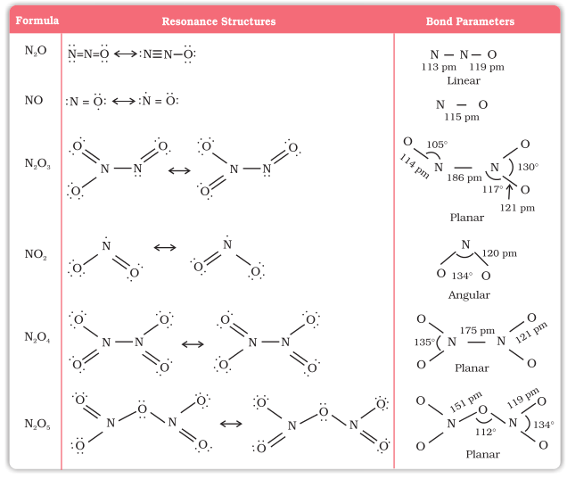

7.4 Oxides of Nitrogen
Nitrogen forms a number of oxides in different oxidation states. The names, formulas, preparation and physical appearance of these oxides are given in Table 7.3.
Table 7.3: Oxides of Nitrogen

Lewis dot main resonance structures and bond parameters of oxides are given in Table 7.4.
Table 7.4: Structures of Oxides of Nitrogen

Example 7.5
Why does NO2 dimerise ?
Solution
NO2 contains odd number of valence electrons. It behaves as a typical odd molecule. On dimerisation, it is converted to stable N2O4 molecule with even number of electrons